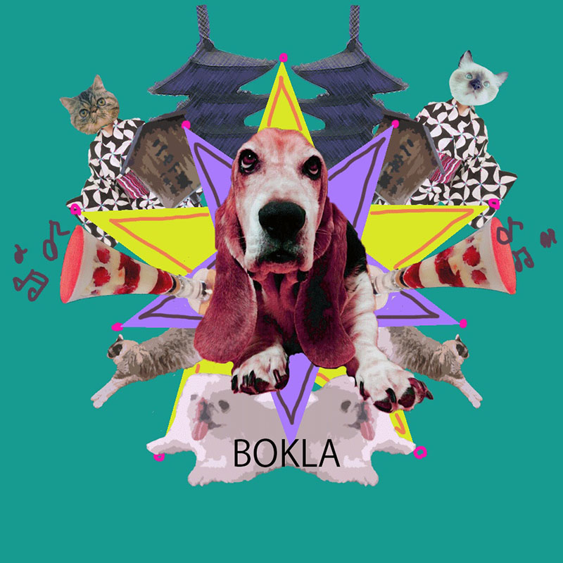

photoshop
初めてphotoshopを使って製作してみて、フィルターを変えたり露出度をいじってみたり切ってみたりとたくさんの機能を触って少しずつ使えるように なってきているのでよかったです。それぞれ写真を切り取ってフィルターを変えました。写真も左右に反転させてて作りました。もっとたくさん触っていいものができるよに頑張りたいと思います。
Illustrator
イラレはハサミツールにとても苦戦しました。長方形ツールと直線ツールを使って製作しました。今も少しハサミツールは苦手なのでもっとイラレを使って使いこなしていきたいと思います。